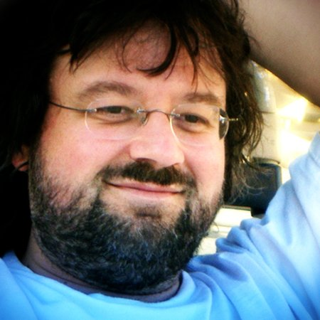

Tony Moskal is a digital media designer and works in documentary television and video productions fulfilling the roles of sound designer, video editor, colorist and motion graphics artist. He has also worked on location as sound recordist, DIT and cameraman.
He began his career as a musician and sound engineer, was nominated for Best Engineer in the Westcoast Canadian Academy of Recording Arts and Sciences, and grew to become an experienced Sound Designer and accredited Video Editor.
Over a decade of producing original music for television helped develop his skills as music editor. Sound effects play an important role in his sound design, and with the ability to produce Dolby 5.1 surround sound mixes he creates immersive soundtracks.
Various software packages are used to produce his work: Protools, Adobe CC: Premiere Pro, After Effects, Photoshop, Final Cut Pro 7 and X, Cinema 4D.
Tony has produced both video and audio for documentaries airing on Discovery, National Geographic International, APTN, CBC, CTV, W Network, Vision, CHUM, OLN, BRAVO, Knowledge Network, Global TV, TVO and History Channel. He has also produced soundtracks for film, featured at The Sundance and Cannes Film Festivals, released by Sony Pictures Classics and Alliance Atlantis.
Other Interests
Tony has a deep love for the ocean, and has been an avid scuba diver since he was twelve years old, so it's no coincidence that he's been so involved in producing underwater television. Tony also enjoys biking, paintball and gaming on the Playstation 4.